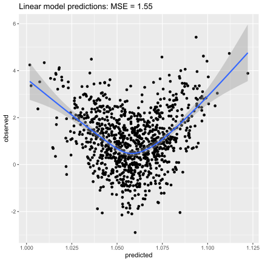
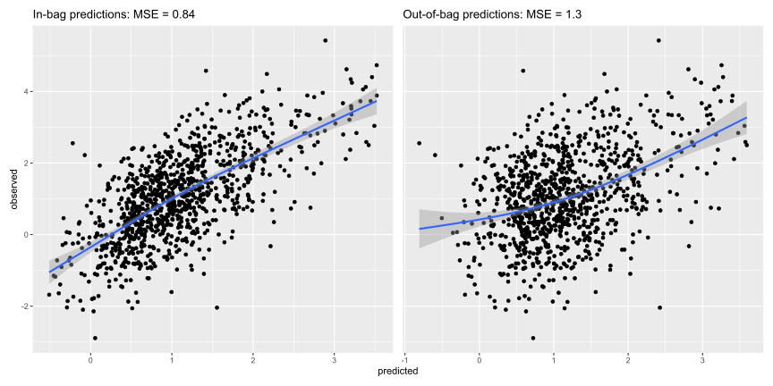
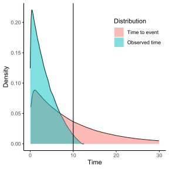
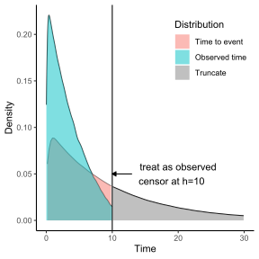
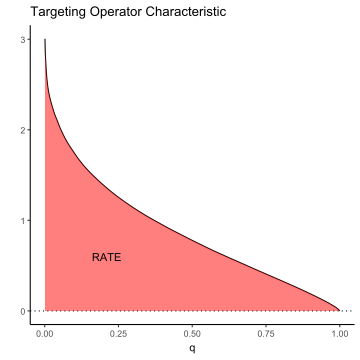
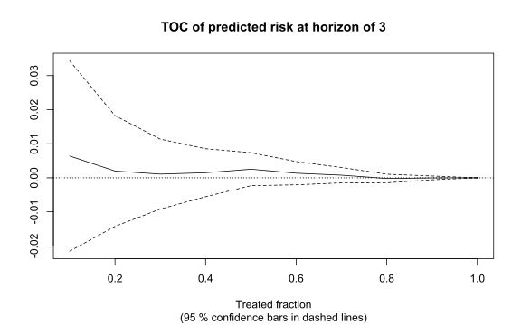
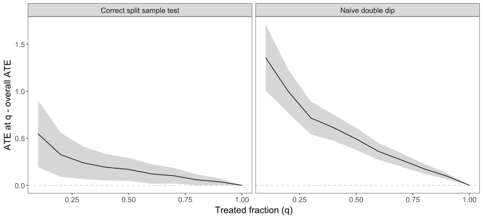

# Set up for const tau example
set.seed(1)
tau_truth <- 1/2
n <- 1000
# randomized treatment
W <- rbinom(n = n, size = 1, prob = 1/2)
# continuous covariate
X <- rnorm(n = n)
# outcome
Y <- tau_truth * W + abs(X) + rnorm(n)
data <- data.frame(Y=Y, X=X, W=W)Causal random forests with grf
MELODEM data workshop
Overview
Robinson’s residual-on-residual regression
Causal trees
Causal random forest
Causal random survival forest
Inference with causal random forests
Conditional average treatment effect (CATE)
Best linear projection (BLP)
Rank weighted average treatment effect (RATE)
Robinson’s residual-on-residual regression
The partially linear model
Suppose
\[ Y_i = \tau W_i + f(X_i) + \varepsilon_i \] Assume:
\(E[\varepsilon_i | X_i, W_i] = 0\)
untreated outcome is given by unknown function \(f\),
a treatment assignment shifts the outcome by \(\tau\).
How to estimate \(\tau\)?
Suppose
\[ Y_i = \tau W_i + f(X_i) + \varepsilon_i \]
How do we estimate \(\tau\) when we do not know \(f(X_i)\)?
Define:
\[\begin{align*} e(x) &= E[W_i | X_i=x] \,\, \text{(Propensity score)} \\ m(x) &= E[Y_i | X_i = x] = f(x) + \tau e(x) \,\,\,\,\, \text{(Cndl. mean of } Y\text{)} \end{align*}\]
Use propensity and conditional mean
Re-express the partial linear model in terms of \(e(x)\) and \(m(x)\):
\[\begin{align*} Y_i &= \tau W_i + f(X_i) + \varepsilon_i, \, \\ Y_i - \tau e (x) &= \tau W_i + f(X_i) - \tau e(x) + \varepsilon_i, \, \\ Y_i - f(X_i) - \tau e (x) &= \tau W_i - \tau e (x) + \varepsilon_i, \, \\ Y_i - m(x) &= \tau (W_i - e(x)) + \varepsilon_i, \, \\ \end{align*}\]
\(\tau\) can be estimated with residual-on-residual regression (Robinson 1988).
How? Plug in flexible estimates of \(m(x)\) and \(e(x)\)
Re-write as a linear model
More formally,
\[ \hat{\tau} := \text{lm}\Biggl( Y_i - \hat m^{(-i)}(X_i) \sim W_i - \hat e^{(-i)}(X_i)\Biggr). \]
Superscript \(^i\) denotes cross-fit estimates (Chernozhukov et al. 2018).
Cross-fitting: estimate something, e.g., \(e(x)\), using cross-validation.
Why? removes bias from over-fitting.
Example
Suppose \(Y_i = \tau W_i + f(X_i) + \epsilon_i\)
- \(\tau\) is 1/2
- \(W_i\) is randomized treatment
- \(X_i\) is a continuous covariate
- \(f(X_i) = |X_i|\)
By defn, \(E[W_i] = 1/2\) (why?).
Example done wrong
First we’ll do it the wrong way.
Fit a classical model to estimate conditional mean of \(Y\).
Compute residuals and run Robinson’s regression.
What’d we do wrong?
library(glue)
library(ggplot2)
fit_cmean <- lm(Y ~ X, data = data)
m_x <- predict(fit_cmean, new_data = data)
resid_y <- Y - m_x
resid_w <- W - 1/2
tau_fit <- lm(resid_y ~ resid_w)
glue("True tau is {tau_truth}, \\
estimated tau is {coef(tau_fit)[2]}")True tau is 0.5, estimated tau is 0.462441735905266Conditional mean predictions…

Example done wrong, take 2
The model for conditional mean was under-specified.
Fit a flexible model to estimate conditional mean of \(Y\).
Compute residuals and run Robinson’s regression.
What’d we do wrong?
library(aorsf)
fit_cmean <- orsf(Y ~ X, data = data)
m_x <- predict(fit_cmean, new_data = data)
resid_y <- Y - m_x
resid_w <- W - 1/2
tau_fit <- lm(resid_y ~ resid_w)
glue("True tau is {tau_truth}, \\
estimated tau is {coef(tau_fit)[2]}")True tau is 0.5, estimated tau is 0.394643899391376Example done right
We forgot about cross-fitting!
Fit a flexible model to estimate conditional mean of \(Y\).
Use out-of-bag predictions.
Compute residuals and run Robinson’s regression.
m_x_oobag <- predict(fit_cmean, oobag = TRUE)
resid_y <- Y - m_x_oobag
resid_w <- W - 1/2
tau_fit <- lm(resid_y ~ resid_w)
glue("True tau is {tau_truth}, \\
estimated tau is {coef(tau_fit)[2]}")True tau is 0.5, estimated tau is 0.495509155402128Conditional mean predictions

Causal trees
How to grow causal trees
Causal trees are much like standard decision trees, but they maximize
\[n_L \cdot n_R \cdot (\hat{\tau}_L-\hat{\tau}_R)^2\]
where residual-on-residual regression is used to estimate \(\hat{\tau}_L\) and \(\hat{\tau}_R\)
grfestimates \(\hat \tau\) once in the parent node and uses “influence functions” to approximate how \(\hat\tau\) would change if an observation moved from one child node to the other (Wager and Athey 2018).Predictions from leaves are \(E[Y|W=1] - E[Y|W=0]\)
How to grow causal trees
Causal trees use “honesty” and “subsampling” (Wager and Athey 2018).
Honesty: Each training observation is used for one of the following:
Estimate the treatment effect for leaf nodes.
Decide splitting values for non-leaf nodes.
Subsampling: While Breiman (2001)’s random forest uses bootstrap sampling with replacement, the causal random forest samples without replacement.
Causal random forest
Back to the partial linear model
Relaxing the assumption of a constant treatment:
\[ Y_i = \color{red}{\tau(X_i)} W_i + f(X_i) + \varepsilon_i, \, \]
where \(\color{red}{\tau(X_i)}\) is the conditional average treatment (CATE). If we had a neighborhood \(\mathcal{N}(x)\) where \(\tau\) was constant, then we could do residual-on-residual regression in the neighborhood:
\[ \hat\tau_i(x) := lm\Biggl( Y_i - \hat m^{(-i)}(X_i) \sim W_i - \hat e^{(-i)}(X_i), \color{red}{w = 1\{X_i \in \mathcal{N}(x) \}}\Biggr), \]
Random forest adaptive neighborhoods
Suppose we fit a random forest with \(B\) trees to a training set of size \(n\), and we compute a prediction \(p\) for a new observation \(x\):
\[\begin{equation*} \begin{split} & p = \sum_{i=1}^{n} \frac{1}{B} \sum_{b=1}^{B} Y_i \frac{1\{Xi \in L_b(x)\}} {|L_b(x)|} \end{split} \end{equation*}\]
\(L_b(x)\) indicates the leaf node that \(x\) falls into for tree \(b\)
The inner sum is the mean of outcomes in the same leaf as \(x\)
This generalizes to causal random forests (it’s easier to write with regression trees).
Random forest adaptive neighborhoods
Pull \(Y_i\) out of the sum that depends on \(b\):
\[\begin{equation*} \begin{split} p &= \sum_{i=1}^{n} \frac{1}{B} \sum_{b=1}^{B} Y_i \frac{1\{Xi \in L_b(x)\}} {|L_b(x)|} \\ &= \sum_{i=1}^{n} Y_i \sum_{b=1}^{B} \frac{1\{Xi \in L_b(x)\}} {B \cdot |L_b(x)|} \\ & = \sum_{i=1}^{n} Y_i \color{blue}{\alpha_i(x)}, \end{split} \end{equation*}\]
- \(\alpha_i(x) \propto\) no. of times observation \(i\) lands in the same leaf as \(x\)
Plug weights in to lm
Instead of defining neighborhood boundaries, weight by similarity:
\[ \hat\tau_i(x) := \text{lm}\Biggl( Y_i - \hat m^{(-i)}(X_i) \sim W_i - \hat e^{(-i)}(X_i), w = \color{blue}{\alpha_i(x)} \Biggr). \] This forest-localized version of Robinson’s regression, paired with honesty and subsampling, gives asymptotic guarantees for estimation and inference (Wager and Athey 2018):
Pointwise consistency for the true treatment effect.
Asymptotically Gaussian and centered sampling distribution.
Three main components
The procedure to estimate \(\hat\tau_i\) has three pieces:
\[ \hat\tau_i(x) := \text{lm}\Biggl( Y_i - \color{green}{\hat m^{(-i)}(X_i)} \sim W_i - \color{red}{\hat e^{(-i)}(X_i)}, w = \color{blue}{\alpha_i(x)} \Biggr). \]
\(\color{green}{\hat m^{(-i)}(X_i)}\) is a flexible, cross-fit estimate for \(E[Y|X]\)
\(\color{red}{\hat e^{(-i)}(X_i)}\) is a flexible, cross-fit estimate for \(E[W|X]\)
\(\color{blue}{\alpha_i(x)}\) are the similarity weights from a causal random forest
Causal random survival forest
Set up
Assume the survival setting:
\[\begin{equation} Y_i = \begin{cases} T_i & \text{if } \, T_i \leq C_i \\ C_i & \text{otherwise} \end{cases} \end{equation}\]
Where \(T_i\) is time to event and (\(C_i\)) is time to censoring. Define
\[\begin{equation} D_i = \begin{cases} 1 & \text{if } \, T_i \leq C_i \\ 0 & \text{otherwise.} \end{cases} \end{equation}\]
Observed time versus true time
Event times are obscured by
censoring
end of follow-up, i.e., \(h\)

Observed time versus true time
Event times are obscured by
censoring
end of follow-up, i.e., \(h\)
Estimate restricted mean survival time (RMST): \(E \left[ \text{min}(T, h) \right]\). See Cui et al. (2023) for more details on adjustment for censoring.

Treatment effects for survival
Two treatment effects can be estimated conditional on \(h\).
- RMST \[\tau(x) = E[\min(T(1), h) - \min(T(0), h) \, | X = x],\]
- Survival probability: \[\tau(x) = P[T(1) > h \, | X = x] - P[T(0) > h \, | X = x].\] \(T(1)\) and \(T(0)\) are treated and untreated event times, respectively.
Inference with causal random forests
Summaries of CATEs
You could compute average treatment effect (ATE) as the mean of CATEs:
\[\hat\tau = \frac{1}{n}\sum_{i=1}^n \hat\tau_i(x)\] But the augmented inverse probability weighted ATE is better:
\[ \hat \tau_{AIPW} = \frac{1}{n} \sum_{i=1}^{n}\left( \overbrace{\tau(X_i)}^{\text{Initial estimate}} + \overbrace{\frac{W_i - e(X_i)}{e(X_i)[1 - e(X_i)]}}^{\text{debiasing weight}} \cdot \overbrace{\left(Y_i - \mu(X_i, W_i)\right)}^{\text{residual}} \right) \]
Summaries of CATEs contd.
For simplicity, re-write the augmented inverse probability ATE as
\[\hat\tau = \frac{1}{n}\sum_{i=1}^n \hat\Gamma_i(x),\] With a vector of these \(\Gamma_i\)’s, define:
Average treatment effect (ATE) =
mean(gamma)Best linear projection (BLP) =
lm(gamma ~ X)
Estimating the ATE
First, we’ll prepare the data:
# loads packages and R functions
targets::tar_load_globals()
# loads a specific target
tar_load(data_sim)Second, coerce data to grf format:
# helper function for grf data prep
data_grf <- data_coerce_grf(data_sim$values)
# just a view of the X matrix
head(data_grf$X, n = 2) age biomarker_1 biomarker_2 biomarker_3 sex_female
[1,] 66.27077 0.5851853 0.007190105 0.08550595 1
[2,] 65.51047 1.1224445 -0.750371586 0.36835322 1Fitting the forest
Third, fit the causal survival forest:
fit_grf <- causal_survival_forest(
X = data_grf$X, # covariates
Y = data_grf$Y, # time to event
W = data_grf$W, # treatment status
D = data_grf$D, # event status
horizon = 3, # 3-year horizon
# treatment effect will be
# measured in terms of the
# restricted mean survival time
target = 'RMST'
)
fit_grfGRF forest object of type causal_survival_forest
Number of trees: 2000
Number of training samples: 2500
Variable importance:
1 2 3 4 5
0.198 0.530 0.115 0.138 0.019 Get \(\Gamma\) scores
Remember the \(\Gamma_i\)’s that provide conditional estimates of \(\tau\)? Let’s get them.
# pull the augmented CATEs from the fitted grf object
gammas <- get_scores(fit_grf)- With
gammas, we can compute ATE manually
mean(gammas) [1] -0.4372923- Verify this is what the
grffunction gives
average_treatment_effect(fit_grf) estimate std.err
-0.43729231 0.04196198 Your turn
Open classwork/04-causal_forests.qmd and complete Exercise 1
Reminder: Red sticky note for help, green sticky when you finish.
Note: the
data_coerce_grf()function can save you lots of time.
Estimating the BLP
The BLP (Semenova and Chernozhukov 2021):
Is estimated by regressing a set of covariates on \(\Gamma\).
Can be estimated for a subset of covariates
Can be estimated for a subset of observations.
Summarizes heterogeneous treatment effects conditional on covariates.
You can estimate BLP manually:
data_blp <- bind_cols(gamma = gammas, data_grf$X)
fit_blp <- lm(gamma ~ ., data = data_blp)What happens underneath the grf hood
Here’s how you can replicate grf results:
lmtest::coeftest(fit_blp,
vcov = sandwich::vcovCL,
type = 'HC3')
t test of coefficients:
Estimate Std. Error t value Pr(>|t|)
(Intercept) -1.7605791 0.5488236 -3.2079 0.001354 **
age 0.0201407 0.0084055 2.3961 0.016642 *
biomarker_1 -0.0526611 0.0422813 -1.2455 0.213066
biomarker_2 -0.0075579 0.0438237 -0.1725 0.863089
biomarker_3 -0.0680319 0.0436954 -1.5570 0.119608
sex_female 0.0429797 0.0838533 0.5126 0.608306
---
Signif. codes: 0 '***' 0.001 '**' 0.01 '*' 0.05 '.' 0.1 ' ' 1best_linear_projection(fit_grf, data_grf$X)
Best linear projection of the conditional average treatment effect.
Confidence intervals are cluster- and heteroskedasticity-robust (HC3):
Estimate Std. Error t value Pr(>|t|)
(Intercept) -1.7605791 0.5488236 -3.2079 0.001354 **
age 0.0201407 0.0084055 2.3961 0.016642 *
biomarker_1 -0.0526611 0.0422813 -1.2455 0.213066
biomarker_2 -0.0075579 0.0438237 -0.1725 0.863089
biomarker_3 -0.0680319 0.0436954 -1.5570 0.119608
sex_female 0.0429797 0.0838533 0.5126 0.608306
---
Signif. codes: 0 '***' 0.001 '**' 0.01 '*' 0.05 '.' 0.1 ' ' 1Your turn
Complete Exercise 2
Your turn
Complete Exercise 3
Rank-Weighted Average Treatment Effect
While ATE and BLP are helpful, they do not tell us the following:
How good is a treatment prioritization rule at distinguishing sub-populations with different conditional treatment effects?
Is there any heterogeneity present in a conditional treatment effect?
The rank-weighted average treatment effect (RATE) answers both of these.
Treatment prioritization rules
Suppose we have a treatment that benefits some (not all) adults. Who should initiate treatment? A treatment prioritization rule can help:
high score for those likely to benefit from treatment.
low score for those likely to have a small/negative benefit from treatment.
Risk prediction models can be a treatment prioritization rule:
- Initiate antihypertensive medication if predicted risk for cardiovascular disease is high.
How to evaluate treatment prioritization
The basic idea:
Chop the population up into subgroups based on the prioritization rule, e.g., by decile of score.
Estimate the ATE in each group, separately, and compare to the overall estimated ATE from treating everyone
Plot the difference between group-specific ATE and the overall ATE for each of the groups
Example: the Targeting Operator Characteristic (TOC)
Targeting Operator Characteristic (TOC)
Create groups by including the top q\(^\text{th}\) fraction of individuals with the largest prioritization score.
Use many values of \(q\) to make the pattern more curve-like
Motivation: Receiver Operating Characteristic (ROC) curve, a widely used metric for assessing discrimination of predictions.
RATE: area underneath TOC
RATE is estimated by taking the area underneath the TOC curve.
\[\textrm{RATE} = \int_0^1 \textrm{TOC}(q) dq .\]
As \(\tau(X_i)\) approaches a constant, RATE approaches 0.

RATE of prediction model
Let’s use RATE to see how well risk prediction works as a treatment prioritization rule.
library(aorsf)
fit_orsf <- orsf(time + status ~ .,
data = data_sim$values,
oobag_pred_horizon = 3)
# important to use oobag!
prd_risk <- as.numeric(fit_orsf$pred_oobag)
prd_rate <-
rank_average_treatment_effect(fit_grf,
priorities = prd_risk)Not good

Estimating RATE from CATE
An intuitive way to assign treatment priority is to use the CATE: \(\hat\tau(X_i)\)
\(\hat\tau(X_i)\) should not be estimated and evaluated using the same data
Use split-sample estimation or cross-fitting (Yadlowsky et al. 2021).
As a preliminary step, we’ll split our data in to training and testing sets
train_index <- sample(x = nrow(data_sim$values), size = 1250)
data_trn <- data_sim$values[train_index, ]
data_tst <- data_sim$values[-train_index, ]
data_trn_grf <- data_coerce_grf(data_trn)
data_tst_grf <- data_coerce_grf(data_tst)Fitting
We fit one forest with training data to estimate CATE and fit another forest with testing data to evaluate the CATE estimates:
fit_trn_grf <- causal_survival_forest(
X = data_trn_grf$X, Y = data_trn_grf$Y,
W = data_trn_grf$W, D = data_trn_grf$D,
horizon = 3, target = 'RMST'
)
fit_tst_grf <- causal_survival_forest(
X = data_tst_grf$X, Y = data_tst_grf$Y,
W = data_tst_grf$W, D = data_tst_grf$D,
horizon = 3, target = 'RMST'
)
Predicting
We use the forest fitted to training data to estimate CATE for the testing data. For illustration, we also estimate naive CATE
# the fitted forest hasn't
# seen the testing data
tau_hat_split <- fit_trn_grf %>%
predict(data_tst_grf$X) %>%
getElement("predictions")
# Illustration only (don't do this)
tau_hat_naive <- fit_trn_grf %>%
predict(data_trn_grf$X) %>%
getElement("predictions")
Evaluating
We use the forest fitted to the testing data to evaluate the CATE estimates for observations in the testing data
rate_split <-
rank_average_treatment_effect(
forest = fit_tst_grf,
priorities = tau_hat_split,
target = "AUTOC"
)
# Illustration only (don't do this)
rate_naive <-
rank_average_treatment_effect(
forest = fit_trn_grf,
priorities = tau_hat_naive,
target = "AUTOC"
)
Correct versus overly optimistic
The problem with being overly optimistic is it has very high type 1 error

Your turn
Complete Exercise 4
References
Breiman, Leo. 2001. “Random Forests.” Machine Learning 45: 5–32.
Chernozhukov, Victor, Denis Chetverikov, Mert Demirer, Esther Duflo, Christian Hansen, Whitney Newey, and James Robins. 2018. “Double/debiased machine learning for treatment and structural parameters.” The Econometrics Journal 21 (1): C1–68. https://doi.org/10.1111/ectj.12097.
Cui, Yifan, Michael R Kosorok, Erik Sverdrup, Stefan Wager, and Ruoqing Zhu. 2023. “Estimating Heterogeneous Treatment Effects with Right-Censored Data via Causal Survival Forests.” Journal of the Royal Statistical Society Series B: Statistical Methodology 85 (2): 179–211.
Robinson, Peter M. 1988. “Root-n-Consistent Semiparametric Regression.” Econometrica: Journal of the Econometric Society, 931–54.
Semenova, Vira, and Victor Chernozhukov. 2021. “Debiased Machine Learning of Conditional Average Treatment Effects and Other Causal Functions.” The Econometrics Journal 24 (2): 264–89.
Wager, Stefan, and Susan Athey. 2018. “Estimation and Inference of Heterogeneous Treatment Effects Using Random Forests.” Journal of the American Statistical Association 113 (523): 1228–42.
Yadlowsky, Steve, Scott Fleming, Nigam Shah, Emma Brunskill, and Stefan Wager. 2021. “Evaluating Treatment Prioritization Rules via Rank-Weighted Average Treatment Effects.” arXiv Preprint arXiv:2111.07966.